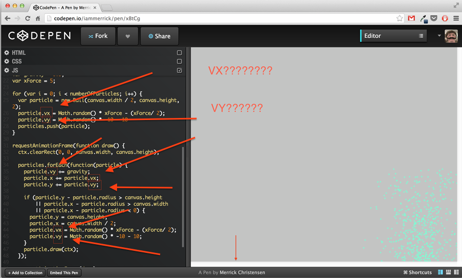

HTML5 Canvas
Animation with Javascript
Josh Robertson / @hossman333
Josh Robertson
- Domo
- Open Source Enthusiast
- Snowflake
- Codepen

Topics
- Briefly talk about the Drawing API
- Basic Trigonometry for animation
- Basic motion (Velocity & Acceleration)
What is canvas?
- Graphics with javascript
- Drawing pad controlled with js
- The API provides the drawing functionality.
Forewarning
Lots of demos.
Drawing API
- strokeStyle
- fillStyle
- lineWidth
- beginPath()
- closePath()
- stroke()
- lineTo(x, y)
- moveTo(x, y)
- arc(x, y, radius, startAngle, endAngle [, anticlockwise])
- clearRect(x, y, width, height)
- fillRect(x, y, width, height)
- save()
- restore()
Tapping into the API
var canvas = document.getElementById('example');
var ctx = canvas.getContext('2d');
Clearing the Canvas
ctx.clearRect(0, 0, canvas.width, canvas.height);
Trigonometry
- Math != Fear
- Math.sin
- Math.cos
Radian and degrees
Radians to Degrees
radians = degrees * Math.PI / 180
degrees = radians * 180 / Math.PI
Half Circle with Radians
var canvas = document.getElementById('example');
var ctx = canvas.getContext('2d');
var radius = 50;
ctx.beginPath();
ctx.arc(canvas.width / 2, canvas.height / 2, radius, 0, Math.PI);
ctx.stroke();
Live Example
Full Circle with Radians
var canvas = document.getElementById('example');
var ctx = canvas.getContext('2d');
var radius = 50;
ctx.beginPath();
ctx.arc(canvas.width / 2, canvas.height / 2, radius, 0, Math.PI * 2);
ctx.stroke();
Live Example
1/4 Circle with Radians
var canvas = document.getElementById('example');
var ctx = canvas.getContext('2d');
var radius = 50;
ctx.beginPath();
ctx.arc(canvas.width / 2, canvas.height / 2, radius, 0, Math.PI / 2);
ctx.stroke();
Live Example
Half Circle with Degrees
var canvas = document.getElementById('example');
var ctx = canvas.getContext('2d');
var radius = 50;
var degrees = 180;
var radians = degrees * Math.PI / 180;
ctx.beginPath();
ctx.arc(canvas.width / 2, canvas.height / 2, radius, 0, radians);
ctx.stroke();
Live Example
Full Circle with Degrees
var canvas = document.getElementById('example');
var ctx = canvas.getContext('2d');
var radius = 50;
var degrees = 360;
var radians = degrees * Math.PI / 180;
ctx.beginPath();
ctx.arc(canvas.width / 2, canvas.height / 2, radius, 0, radians);
ctx.stroke();
Live Example
1/4 Circle with Degrees
var canvas = document.getElementById('example');
var ctx = canvas.getContext('2d');
var radius = 50;
var degrees = 90;
var radians = degrees * Math.PI / 180;
ctx.beginPath();
ctx.arc(canvas.width / 2, canvas.height / 2, radius, 0, radians);
ctx.stroke();
Live Example
Classic Coordinate System
Graphics Coordinate System
Classic Angle System

Canvas Angle System
Sine Waves

Sine Waves part 2! :)
Live Example
Animate with Sine Waves!
ctx.clearRect(0, 0, canvas.width, canvas.height);
Animate with Sine Waves part 2!
- RequestAnimationFrame (of course)
- Create a circle (ball)
- (x, y)
- Loop it! (for loop)
- Random size? Sure!
Sine Waves in action
Live Example
Basic Motion
Velocity?
Acceleration?
What is Velocity?
- Velocity = Speed and Direction
- Velocity on x = horizontal movement
- Velocity on y = vertical movement
vx & vy
Velocity on x axis
Live Example
Velocity on both axis
Live Example
Angular Velocity
Back to math
var radians = angle * Math.PI / 180;
var vx = Math.cos(radians) * speed;
var vy = Math.sin(radians) * speed;
Live Example
What is acceleration?
Acceleration on x axis
var x = 0;
var vx = 0;
var ax = 0.04;
requestAnimationFrame(function draw() {
vx += ax;
x += vx;
requestAnimationFrame(draw);
});
Acceleration on y axis
var y = 0;
var vy = 0;
var ay = 0.04;
requestAnimationFrame(function draw() {
vy += ay;
y += vy;
requestAnimationFrame(draw);
});
Acceleration + Velocity on both axis
Live Example
Thank you!
- Github - Hossman333
- Twitter - @hossman333
- Codepen - hossman
- hossman333@gmail.com
- Foundation HTML5 Animation with JavaScript